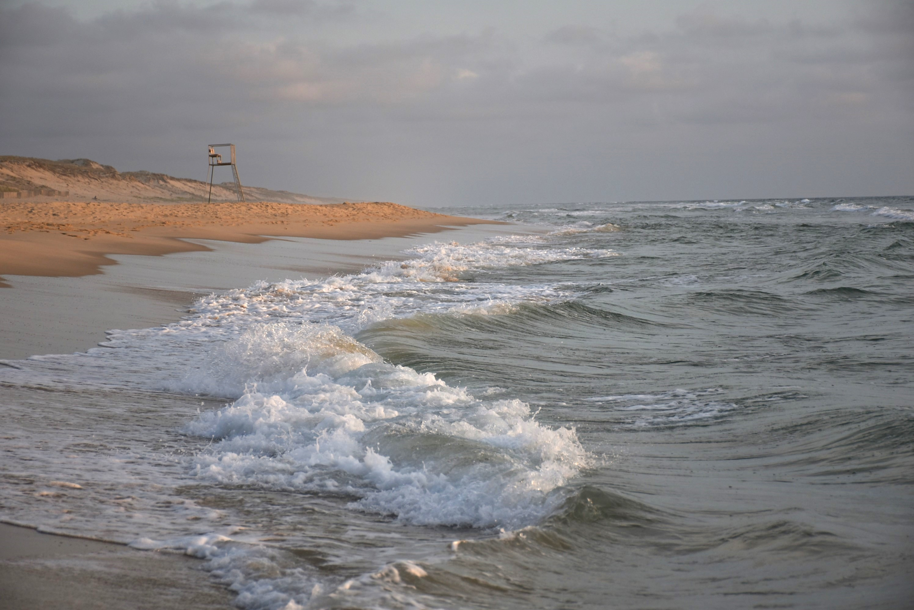
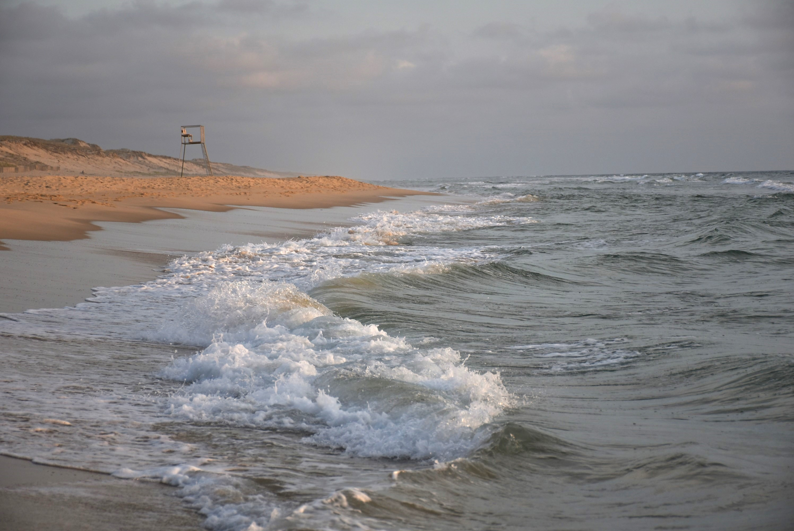

"Il y a une sorte de pureté dans ce théâtre de brume et lumière, tout semble suspendu aux limbes.
On remarque alors chaque détail et chaque couleur devient plus intense, comme si elle se libérée de son repli."


"Là où la beauté perceptible est dans la grandeur des panoramas,
les détails presques impalpables et étincellants se trouvent dans le monde discret du minuscule.
Le jeu entre des formes aux géométries précises et étonnantes et l'assemblage de textures
donnent à ce paysage caché des allures de contes de fée."


"Dans la nature, la musique est racontée par le bruit de l'eau.
Du simple récital porté par une rivière calme à la symphonie des vagues s'abattant sur le sable,
ce décor nous montre la fugacité de l'instant."
 



"Lorsque le monde se recouvre d'un manteau monochrome nous rappelant les photos noires et blanches d'antan.
L'air pétrifiant apporté par les neiges révèle une certaine beauté intacte et pure."